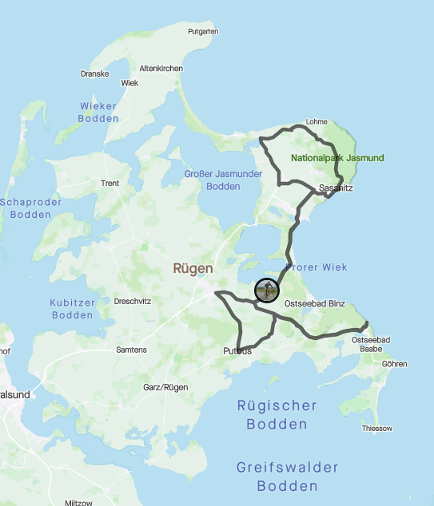
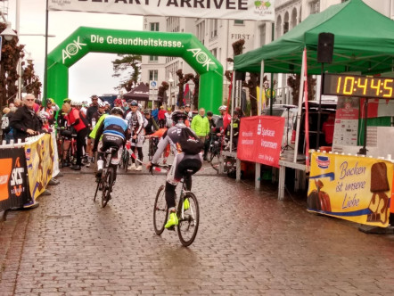
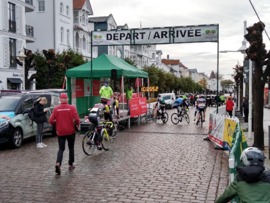
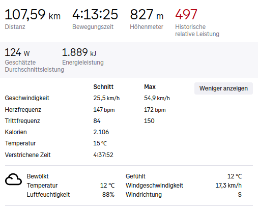
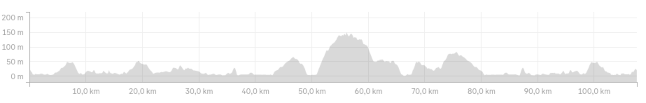
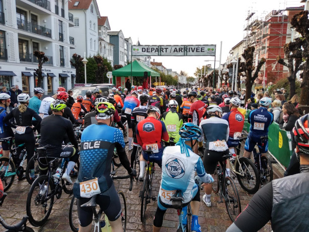
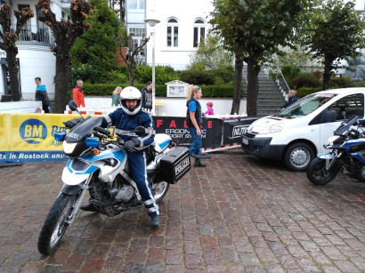

Blick auf die Ostsee nach dem Rennen

Streckenführung Sellin-Sellin

Ankunft im Ziel (Fahrer der 66 km langen Rennstrecke)

Meine Daten aus Strava

Höhenprofil 107 km

Vor dem Start (107 km)

Selbstverständlich mit Polizei-Eskorte
Blick auf die Ostsee nach dem Rennen